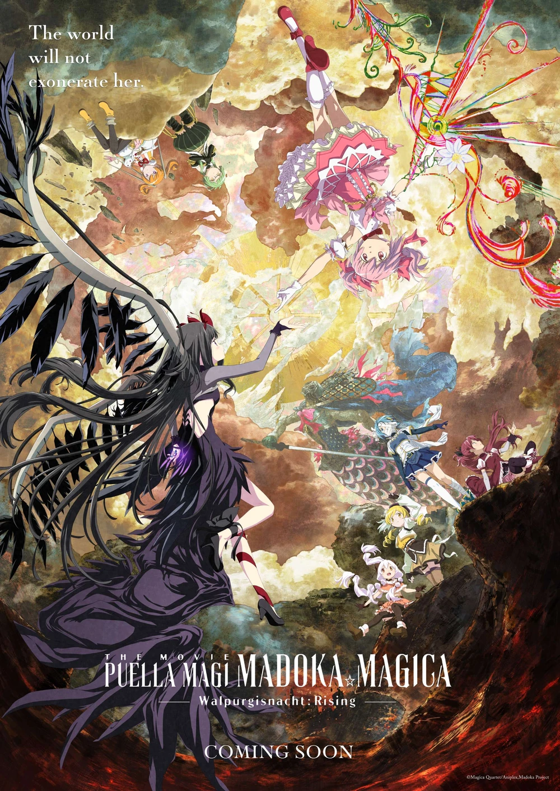
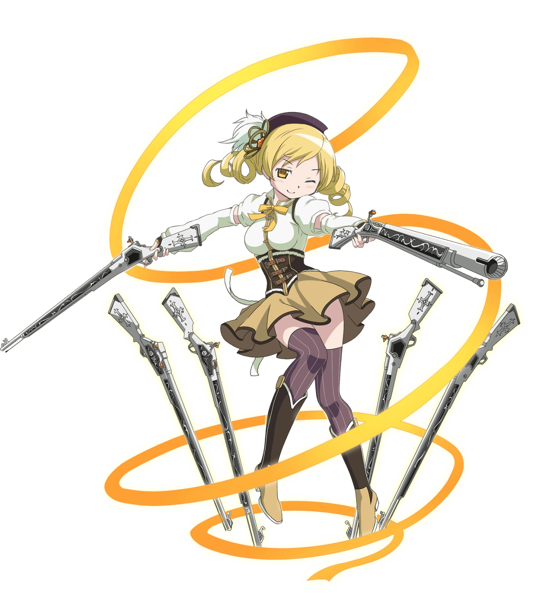
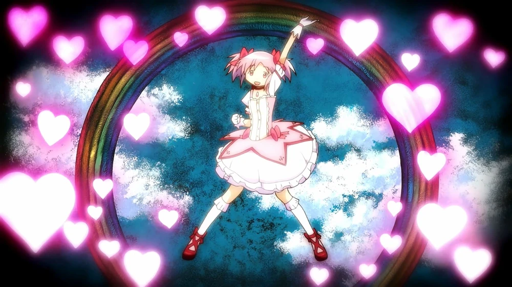

I watched madoka magica 2026 and I have SO MUCH to yappppp

okay so first of all, a little backstory before I start yapping about the movie
I've known about Madoka Magica since I was in middle school, I think?? like I remember seeing this picture of the characters somewhere and for some reason I decided to draw them in class because I was bored the class :/

I hadn't even watched the anime back then, I just saw the characters somewhere, thought they looked cool.
anywayyy, fast forward like 2 years later, when I was in 9th grade I think.. I finally started watching Madoka Magica for the first time.
and yea...

I watching the first season, but after that I kinda got confused about what I was supposed to watch next. like there were movies and stuff and I didn't know which one continued the story TwT
eventually I watched Rebellion too, but after that I just kinda left the series alone for YEARS.
like I completely forgot about it
and now here I am, in 12th grade, literally my last year of high school. I hadn't really thought about Madoka Magica anymore
UNTIL RECENTLY.
one of my friends is apparently a HUGE Madoka fan, and since the new Madoka movie came out in 2026, we were like...

"hmmm wait that's actually interesting. why don't we go watch it together??"
and yea. yesterday I actually rewatched Rebellion because I had forgotten almost EVERYTHING that happened in it.
like I remembered Homura and Madoka and some of the important stuff, but the actual plot??? GONE. completely disappeared from my brain.....
ANYWAYYY, LET'S START WITH TODAY!

sooo I woke up this morning kinda late,
but it was fine because I had plans to go to the mall with my friends to watch MADOKA!!!
there were three of us going together.
we met up at the mall, bought our movie tickets, and then had to wait for our other friend to arrive.
so we just walked around for a bit, doing random stuff while waiting lol.
nothing too crazy.
and then FINALLYYY our other friend showed up.
so...
we went into the cinema and watched the movie together.
and affter that...
Sry I can't show irl pic cuz it too leak ://///
SPOILERS FROM HERE ON!!!!!!!
seriously, I'm gonna yap about the movie and the ending, so if you haven't watched it yet
format(webp))
OKAY SO ABOUT THE STORY...
first of all, CAN WE TALK ABOUT HOMURA???
in the original anime, Madoka literally became a goddess and changed the rules of the universe to save magical girls.
then in Rebellion, Homura rewrote the world again so Madoka could live a normal life.
and now in the 2026 movie, we're dealing with the consequences of that world.
anywayyy, the new movie introduces three new characters: Wasu, Zi Ding Xiang (Lilac), and Selema Terez.
and I was SO confused about them at first because I had no idea who they were or what they even wanted TwT
so basically, all three of them have something to do with the magical girl system, but they each have different goals.
Lilac (Zi Ding Xiang) wants the Law of Cycles to return, but without needing Madoka's human personality.
Selema Terez is completely different. she wants the OLD magical girl system back, where magical girls eventually become witches and produce energy for the universe.
and then there's Wasu.
okay, THIS ONE CONFUSED ME THE MOST.
because WHY DOES SHE LOOK SO MUCH LIKE HOMURA???
and why does she keep calling Madoka "Marguerite"???
at first I genuinely thought she was another version of Homura or something
but turns out Wasu is actually connected to Walpurgisnacht, the giant witch from the original anime.
and the whole Marguerite thing is connected to her forgotten identity.
Marguerite was a magical girl from a really long time ago who wanted to save magical girls, kinda like Madoka.
but she ended up taking in way too many curses, and eventually lost her own identity and became connected to Walpurgisnacht.
so from what I understand, Wasu calling Madoka "Marguerite" has something to do with those lost memories and her own identity.
and the fact that she looks so much like Homura makes everything even MORE confusing. I still don't know if there's a deeper reason for that or if it's supposed to be symbolic.
I genuinely had to look this stuff up after watching because there was NO WAY I was understanding all of that in one sitting.
especially all the things about Walpurgisnacht, the new characters, and the Law of Cycles.
"so what actually happened??"
"did they change the universe again?"
"where did Madoka go?"
"IS THIS ACTUALLY THE END OR NOT??"
the ending still leaves some things unclear.
especially because I hadn't properly followed this series
I still don't fully understand every little detail, especially the new characters and some of the ending, but I think that's okay.
overall, I'm really glad I got to watch this movie with my friends.
and now here I am writing an entire blog about it :pppp
even though the story confused the hell out of me, I'm glad I came back to it.
and yea, that's pretty much my Madoka yapping today.
if you actually read all of this, THANK YOU!!
bye bye :p